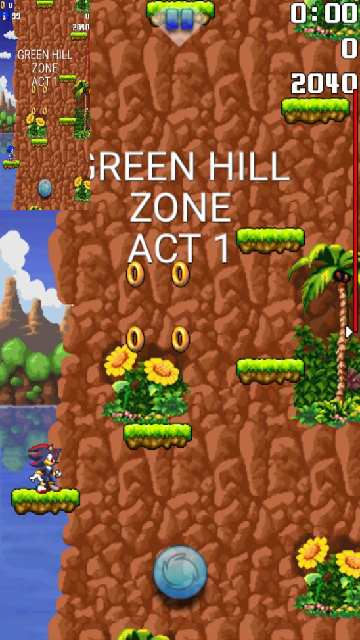

Miscellaneous Projects
If you want to give some help for the game mod development, this page is for you!
You can check the different projects for the game mod development down below.
Event Making
Sonic Jump Anniversary introduces events to make the game replayable at certain times of the year.
If you are interested on making new events for the game, you can make additional content for the event ideas.
In the res/drawable folder of the extracted game, you can find similar looking images with a date prefix on their name.
For example: 131073.png is the background image for Green Hill Zone, whereas 131073_dec25.png is its Christmas event version and 131073_oct31.png is its Halloween event version.
Here are the available events in the game and their date prefix:
- jun23: Sonic's birthday
- oct31: Halloween
- dec25: Christmas
If you want to share your event ideas or want to make other ideas for new events, you can contact Furrican via the Furrican Homepage.
Multiplayer Mode
The goal of this project is to make the Multiplayer Mode enjoyable to play.
In fact, the Multiplayer Mode is actually present in the game, but you have to access it via the secret cheat code. The main reason why this game mode is hidden is because of how it looks in gameplay.

As you can see, during multiplayer, there is a canvas that displays on the top-left of the screen. This canvas is the other player's screen. Obviously, this is a problem, considering that the small canvas hides a part of the main player's screen.
The better solution would be to make a function that makes the other player's character appear on one player's screen, like in most handheld multiplayer games. But the problem is that this idea is way too complicated to make it possible.
If you are enough experience with Java/Smali programming, you can give some help for this game mode.
Sprite Sheet Manipulation
While modding the game, you can modify sprites on sprite sheets, but you currently can't change their size and position values.
Unfortunately, the sprite size and position values aren't located in the Smali code. Instead, they are located in specific files encrypted in the .pak files (located in the "res/drawable" folder of the decompiled game).
Here is the proof: If you open a .pak file with a HEX editor and check the hex values, you can find letters that represent different file formats.

In numerous places, you can recognize the "PNG" and "DAT" format, as well as what seem to be "HDR" and "PAB" file formats.
In fact, GdGohan has already managed to extract the .png files, but not the rest. If we can extract all the remaining the files, that means we can finally access the values that determines the size and position of each sprite.
The purpose of this project is once we can fully manipulate sprite sheets, it is possible to add more playable characters, because the sprites of Sonic and Shadow are limited in terms of size on the sprite sheets.
Additionally, manipulating the sprites also allow us to fix animation issues, such as the double jump when facing left.
Notice how the double jump spin effect isn't animated correctly.